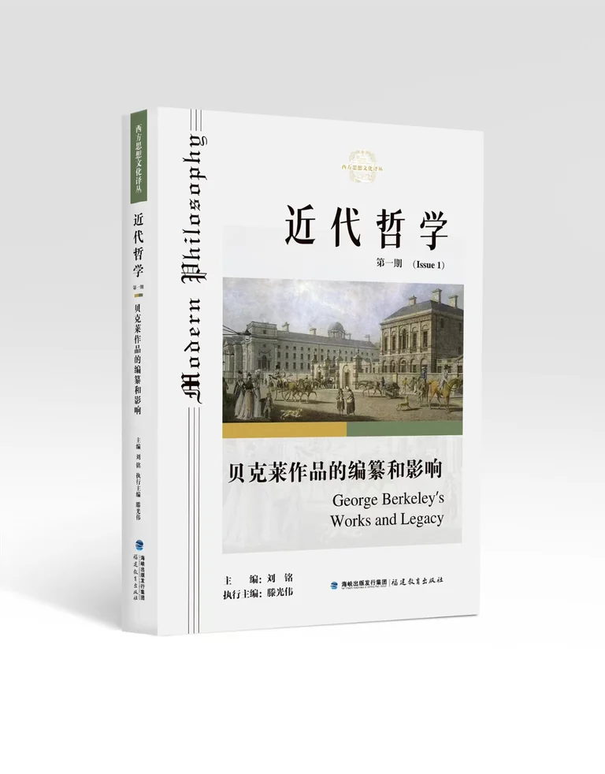

Modern Philosophy
A Chinese-language scholarly publication issued in book form. Its first issue focuses on George Berkeley’s Works and Legacy.
Issue information and contents →Scholarly publishing, translation and documentary research in early modern philosophy.

A Chinese-language scholarly publication issued in book form. Its first issue focuses on George Berkeley’s Works and Legacy.
Issue information and contents →The 西方思想文化译丛 presents 29 Chinese-language volumes in this website catalogue, covering philosophy, intellectual history and cultural inquiry. Each volume has a permanent English introduction, its Chinese title, contributor credits and publication details.
Browse the English catalogue →The center is developing a programme of translation and research on Descartes’s works and correspondence. Recent seminars have addressed editions, textual transmission, terminology and the preparation of sample translations.